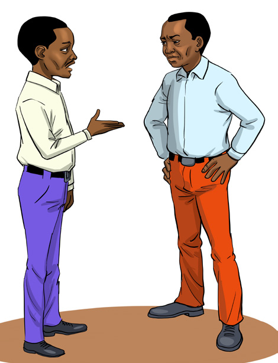
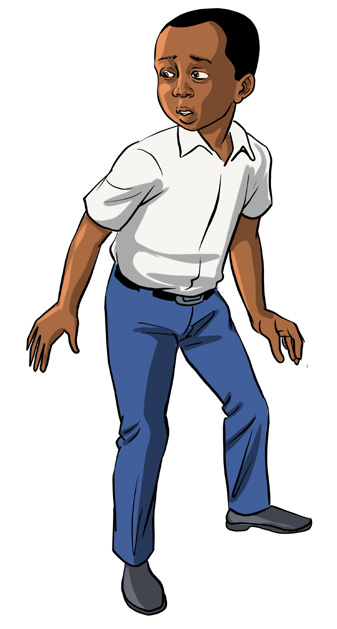
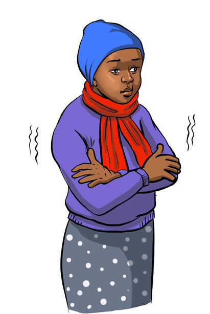
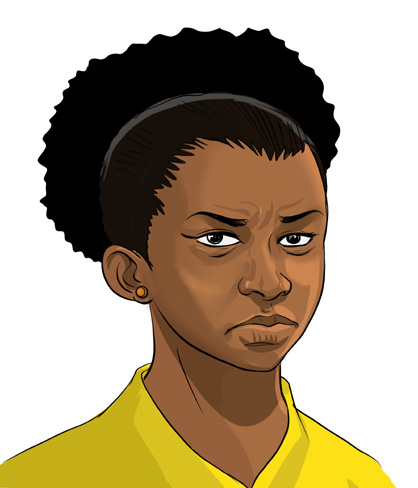

English for Secondary Schools Student’s Book Form One, printed page 131
(b) Study the pictures below and describe how the person might be feeling or what might be happening. An example has been provided for you.
1

Two men talking to each other.2

A boy looks startled and steps back in fear.3

A woman folds her arms and shivers from the cold.4
A man with a shocked expression and mouth open in surprise.5
A smiling person looking pleased and happy.6

A girl frowning with an irritated expression.Example:
In picture 1
The two men are talking to each other.
Task symbol: a blue clipboard with a pen and four checked boxes.

Task
Act out before the class the nonverbal cues for the expressions listed in the box.
| disappointment | pleasure | irritation | |
|---|---|---|---|
| relaxation | sleepiness | excitement | depression |